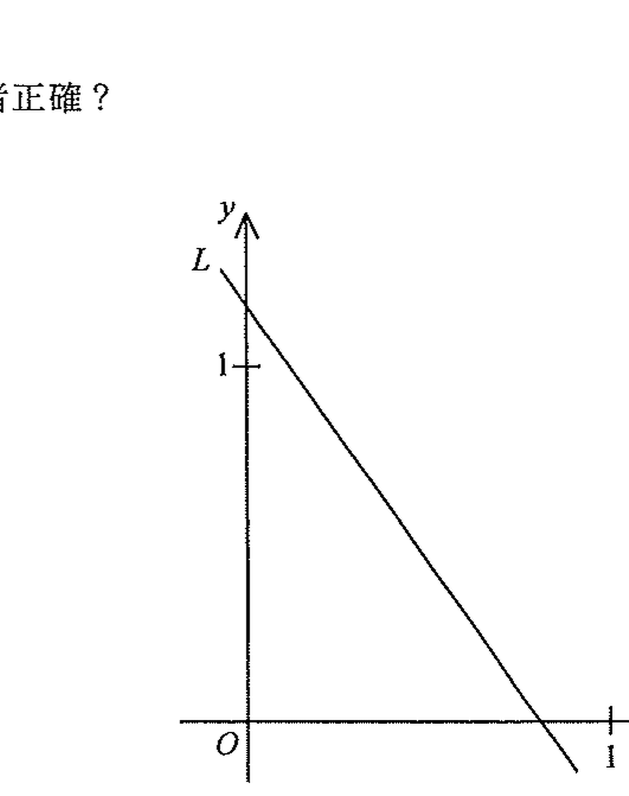
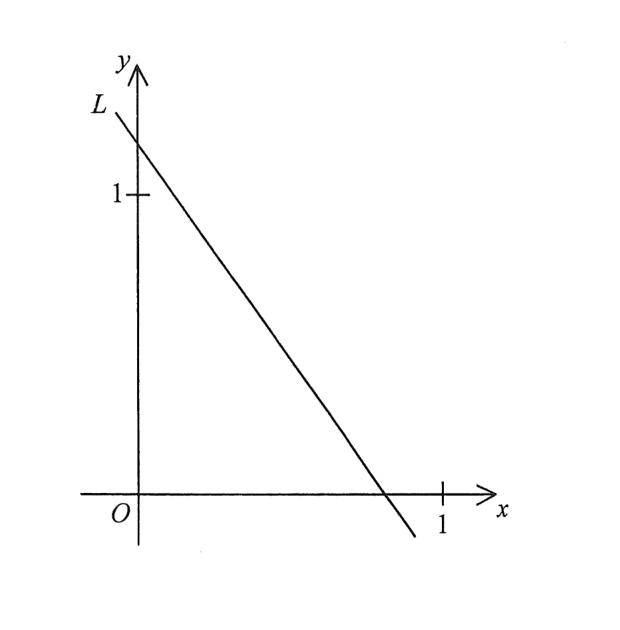

2025 DSE 數學 P2 Q14 答案＋詳解｜答對率 53%
官方答案
A
歷年考生答對率 53%（官方統計）
題目（中文卷）
圖中，直線 $L$ 的方程為 $px+qy=7$。下列何者正確？ I. $p>7$ II. $q>7$ III. $q>p$

- A. 只有 I
- B. 只有 II
- C. 只有 I 及 III
- D. 只有 II 及 III
English version（英文卷題目）
In the figure, the equation of the straight line $ L $ is $ px+qy=7 $. Which of the following is/are true? I. $ p>7 $ II. $ q>7 $ III. $ q>p $

- A. I only
- B. II only
- C. I and III only
- D. II and III only
官方題解 / 評卷參考
答案：A
- $x$ 軸截距為 $\dfrac{7}{p}$、$y$ 軸截距為 $\dfrac{7}{q}$；圖中兩個截距都在正軸上，故 $p>0$、$q>0$。
- 圖中 $x$ 軸截距小於 $1$：$\dfrac{7}{p}<1\Rightarrow p>7$，即 I 正確。
- 圖中 $y$ 軸截距大於 $1$：$\dfrac{7}{q}>1\Rightarrow q<7$；既有 $q<7<p$，故 II（$q>7$）與 III（$q>p$）都錯。
錯項分析：
- B. 只看到 $y$ 軸截距大於 $1$ 就斷定 $q>7$，忽略了截距是 $\dfrac{7}{q}$ 而不是 $q$。
- C. 正確判斷了 I，但把兩個截距的大小關係看反（以為 $y$ 軸截距比 $x$ 軸截距長），於是誤信 $q>p$。
- D. 同時把 II 與 III 判成正確：把 $q$ 想成比 $7$ 大、又以為 $q>p$，即兩個截距都當成大於 $1$。